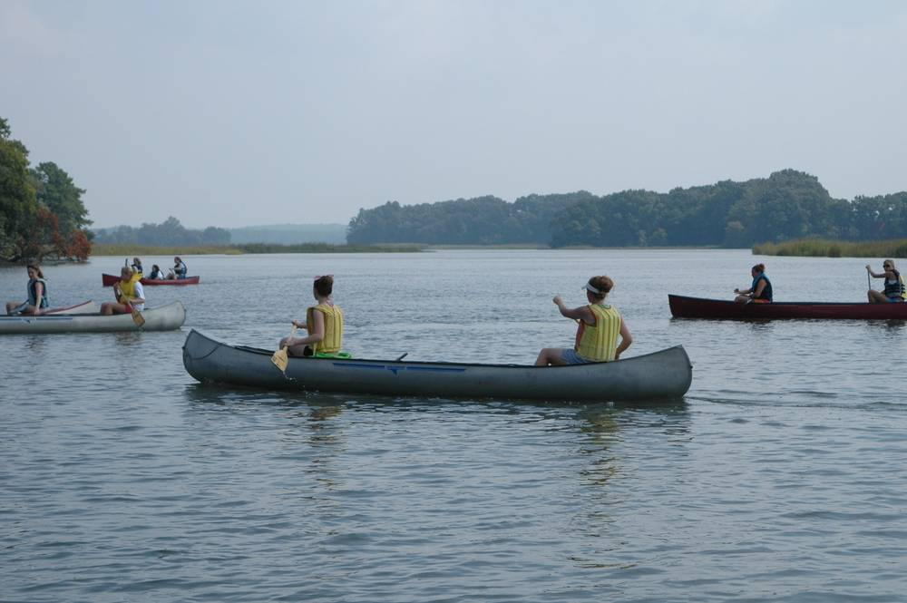

시민에너지 · 해외
래퍼해녹 부족, 옛 수도 터 교육시설 지붕에 12.32 kW 태양광…시공은 원주민 기업이 부족 비용 없이

패널 28장으로 2 MWh 가까이 발전…역량강화 보조금으로 신청부터 설치까지
미국 버지니아주 래퍼해녹 부족이 캣포인트 크리크의 '래퍼해녹 로지' 지붕에 12.32 kW 태양광을 설치했다고 밝혔다. 패널 28장짜리 설비는 가동한 뒤 2 MWh 가까이 발전해 부족의 환경·보전 교육시설 전기요금을 낮추고 있다.
시공은 원주민이 소유한 기업 폴라리스 에코시스템스가 맡아 보조금 신청부터 설치까지 부족에 비용을 물리지 않았다. 돈은 트라이벌 에너지 얼터너티브스의 '부족 태양광 가속 기금'이 2025년 역량강화 보조금으로 댔다.
로지는 미국 어류야생동물관리국이 2023년 부족에 넘긴 7,520제곱피트(약 700㎡) 건물이며, 캣포인트 크리크는 부족의 옛 수도가 있던 곳이다. 부족은 계절별 발전량을 재서 교육·보전 프로그램에 쓸 계획이다. 이 기금은 2025년 11월 26개 부족·단체에 360만 달러를 지원한다고 발표했고, 역량강화 보조금 수혜 10곳 명단에 래퍼해녹이 올라 있다.
출처: Tribal Business News 2026-11-13 Tribal Business News Staff 원문 보기
출처: Tribal Energy Alternatives 2025-11 TSAF 보조금 360만 달러 지원 발표문 원문 보기
시민이 만들고 지역이 소유하는 에너지 전환제4섹터 방식 시민주도 지역에너지 공공개발